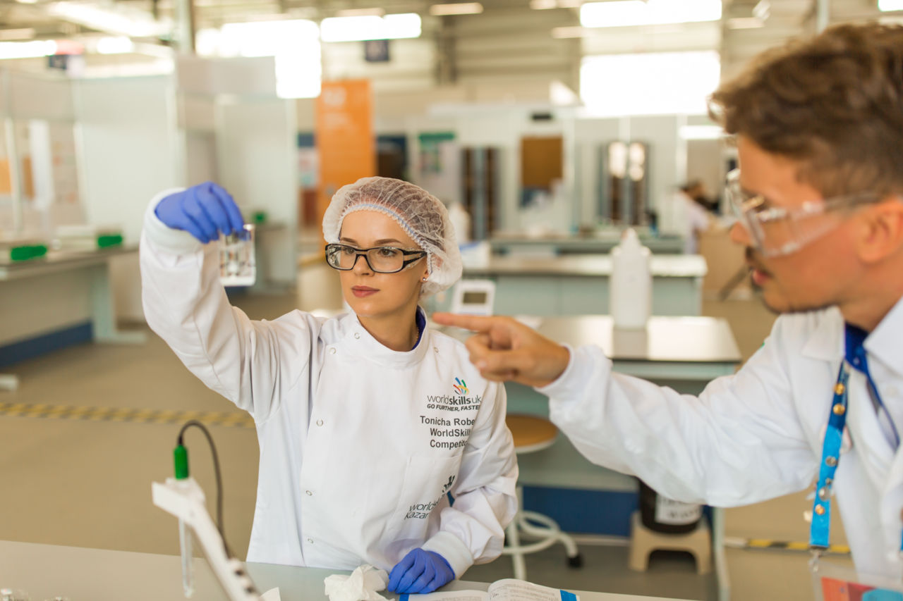

Què són?
El Ministeri d'Educació i Formació Professional organitza i promou competicions de destreses (skills, en anglés) que constitueixen un valuós instrument divulgatiu de la Formació Professional i un mitjà per a estimular a estudiants, professorat i empreses, a més d'una plataforma d'intercanvi i un fòrum de debat sobre de l'evolució dels estàndards professionals, la qualitat i la innovació en els diferents sectors productius.
WorldSkills International i WorldSkills Europe són associacions no governamentals, sense ànim de lucre, la principal activitat del qual és organitzar competicions biennals de formació professional. Totes dues organitzacions reuneixen institucions de formació professional, empreses i associacions professionals líders els diversos sectors productius, amb els objectius de difondre informació i compartir coneixement sobre l'evolució de les destreses professionals, fomentar la qualitat, la innovació i l'intercanvi cultural entre competidors i experts de tot el món. .
La pertinença d'Espanya a aquestes organitzacions comporta la celebració biennal d'un campionat nacional de Formació Professional (Spainskills), que serveix per a seleccionar als competidors espanyols que representen a Espanya en les competicions europees (EuroSkills) i mundials (WorldSkills).
Descobreix que són les Web Skills
Les habilitats creen oportunitats i connecten societats. Són la base del progrés econòmic.
Les Web Skills generen confiança, empoderen a les comunitats i ajuden a impulsar les economies
Inspirem als joves a desenvolupar una passió per les habilitats i la cerca de l'excel·lència, a través de concursos i promocions.
Saber más
Millora en allò que t'apassiona
Tria alguna cosa que t'agrade o en el que sigues bo.
Troba un membre de les Web *Skills que t'ajude a millorar i
desafiar-te a *tí mateix en una competència d'habilitats.
Millora les teues habilitats amb els nostres programes i oportunitats.
Forma part d'una comunitat global que millora el món amb el poder de les habilitats.
